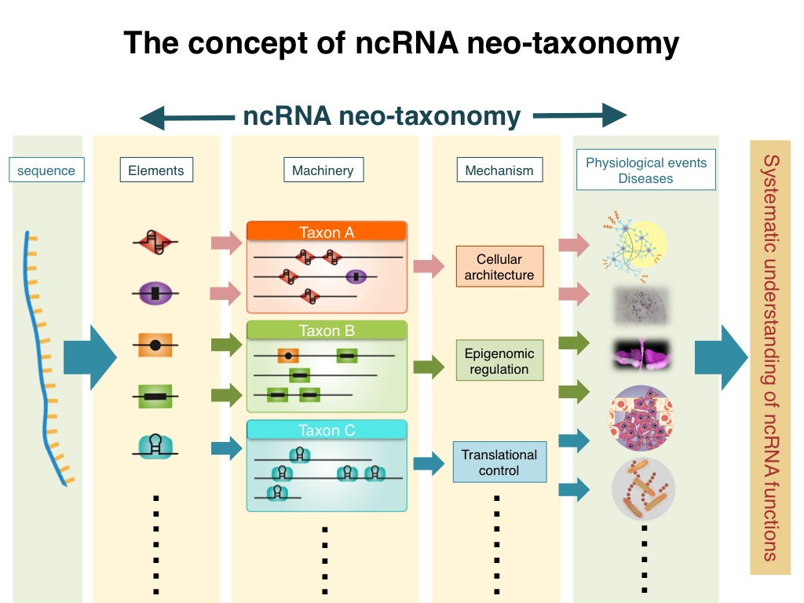
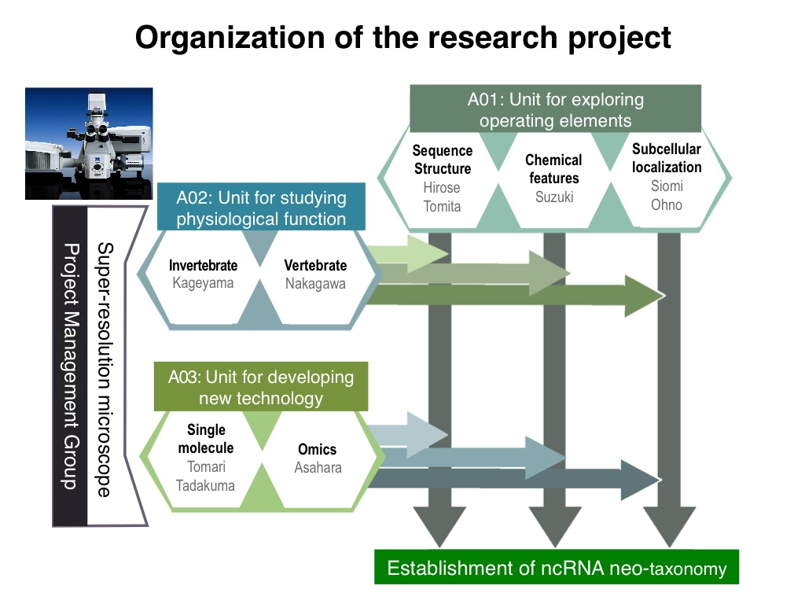

Recent transcriptome analyses have revealed that large portions of the mammalian genomes produce numerous numbers of non-coding RNAs (ncRNAs), which play important regulatory roles in various biological events. Just like proteins, ncRNAs are extremely diverse and are considered to possess their own characteristics that determine their specific functions. However, ncRNAs have so far been collectively defined as the RNAs that are unlikely to code polypeptides, in a manner unlinked to their own features. To accelerate our understanding of ncRNAs, this research project aims to systematically characterize and classify the features of individual ncRNAs, toward our ultimate goal to establish a new system of ncRNA categorization termed “non-coding RNA neo-taxonomy.” For details of this concept, please refer to Hirose et al. (EMBO Rep, 2014).

In this research project, the fundamental functional units of ncRNAs are termed “operating elements” and the ribonucleoprotein complexes formed on the operating elements are termed “operating machineries”. The research project team is comprised of the following three units in order to conduct systematic identification of operating elements and to link them to operating machineries and physiological functions.
- A01: Unit for exploring operating elements
- A02: Unit for studying physiological functions
- A03: Unit for developing new technologies

In addition, the project management group will set up a super-resolution microscope as a common facility to promote investigation of intracellular localization of operating machineries. Through the collaborative works of the three research units and the research management group, this project aims to establish “non-coding RNA neo-taxonomy” for systematic understanding of ncRNA functions.
Establishment of “non-coding RNA neo-taxonomy” will make it possible to predict the functions of unannotated ncRNAs based on their operating elements. This will greatly facilitate the systematic understanding of ncRNA functions and will pave the way for controlling biological phenomena, e.g., artificial designs of functional ncRNAs and chemical screening systems that target ncRNAs. The expected research accomplishments will provide critical insights into ncRNAs for better understanding of RNA toxicity diseases such as neurodegenerative disorders and for developing new pharmaceutical targets.